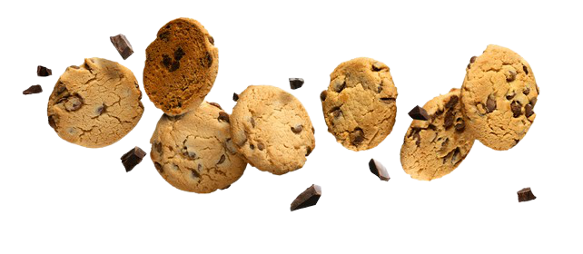

<div class="about-wrapper flex flex-col items-center my-20">
    <div class="about-container flex flex-col gap-16 lg:px-20 max-w-[1366px] ">

        <div class="top-container flex flex-col lg:flex-row p-4 gap-10">
            <div class="title text-4xl lg:text-5xl lg:leading-normal font-marker leading-relaxed text-center lg:text-start">
                WHAT DOES IT MEAN FUNCTIONAL <span class="bg-primary px-2 rounded-xl">SNACKS?</span>
            </div>
            <div class="description-container flex flex-row text-center lg:text-start  ">

                 
                <div class="description lg:justify-center lg:flex lg:flex-col">
                    Snacks that not only give you a unique taste, but also benefit the body because of natural ingredients. Great source of natural vitamins and minerals. 
                </div>
            </div>
        </div>

        <div class="bottem-container flex flex-col lg:flex-row p-4 gap-10 items-center ">
            
            <div class="desc flex flex-col p-4 lg:p-0 gap-10 items-center lg:items-start lg:w-1/3 ">
                <div class="sub-title-container flex flex-row px-4 gap-2 lg:px-0">
                    
                    <div class="sub-title font-semibold lg:text-start">FUNCTIONAL SNACKS WITH WELL-BALANCED INGREDIENTS</div> 
                </div>
                <div class="description text-center lg:text-start">
                    High level of plant-based proteins and healthy fats along with low level of carbohydrates - our snacks are the best choice for active people.
                </div>
                <app-button [buttonValue]="'WANT IT'"></app-button>
            </div>
            <div class="image lg:w-2/3">
                
            </div>
        
        </div>
    </div>
 


</div>